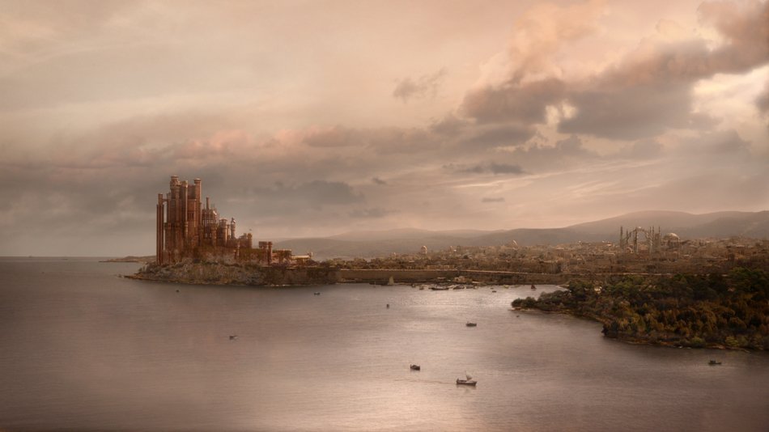
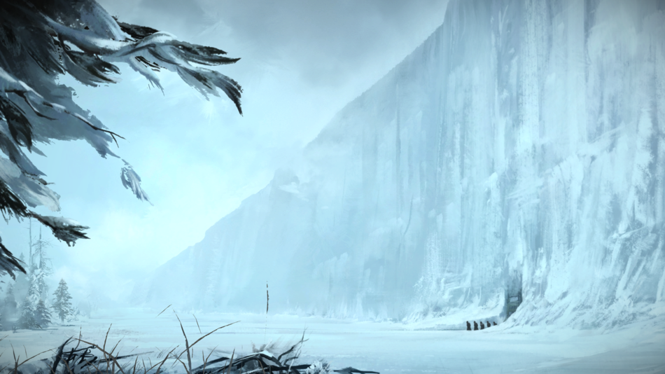
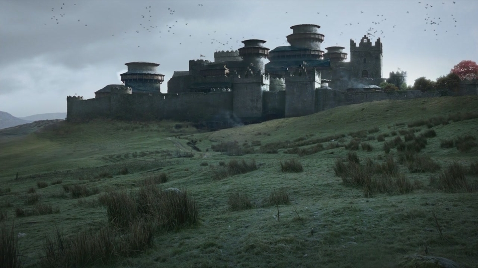

Locations
King's Landing
King's Landing is the capital of the Seven Kingdoms. It is located on the east coast of Westeros in the Crownlands, overlooking Blackwater Bay. It is the site of the Iron Throne and the Red Keep, the seat of the King of the Andals and the First Men. The walled city is located on uplands just north of where the Blackwater Rush flows into Blackwater Bay. It enjoys a warm climate and life there is luxurious for those that can afford it, although it is not without its slums such as Flea Bottom. The city is overpopulated and dangerous at the best of times, despite being policed by a City Watch.

The Wall
The Wall is a colossal fortification which stretches for 300 miles along the northern border of the Seven Kingdoms, defending the realm from the wildlings who live beyond. The Wall is reported to be over 700 feet tall and is made of solid ice. It was supposedly constructed using both magic and mundane means some eight millennia ago, in the aftermath of the Long Night to defend the realm against the White Walkers who apparently dwell in the far north, though they are now considered myths by most.

Winterfell
Winterfell is the seat of House Stark. It is a very large castle located at the center of the North, from where the head of House Stark rules over his people. A small Godswood is enclosed within the walls. It is the capital of the North under King Robb Stark. The castle is located alongside the Kingsroad as it makes its way from the Wall to the capital at King's Landing, more than a thousand miles to the south. It is situated atop hot springs which keep the castle warm even in the worst winters.